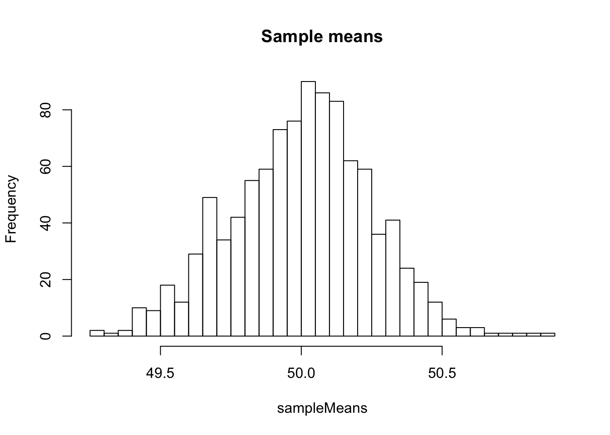

# help("Normal")
X <- rnorm(n = N, mean = mu, sd = sigma)
popMean <- mean(X)
popVar <- mean((X - popMean)^2)
popSD <- sqrt(popVar)
result <- data.frame(
"pop mean" = popMean,
"pop var" = popVar,
"pop SD" = popSD
)
print(result) pop.mean pop.var pop.SD
1 50.00149 15.99975 3.999969hist(x = X,
breaks = 100,
main = "Population",
las = 1,
col = "#BBDDEE",
xlab = "values",
ylab = "")Distribution of numbers in the population.
Draw a sample of size \(n = 256\), compute its mean and standard deviation in 2 ways.
mean(), var(), sd().# help("sample")
x <- sample(x = X, size = n, replace = FALSE)
m <- mean(x) # sample mean
s2 <- sum((x - m)^2) / n # sample variance
s <- sqrt(s2) # sample standard dev
varFromR <- var(x) # result of the R var() function on sample values
sdFromR <- sd(x) # result of the R sd() function on sample values
result <- data.frame(
"sample mean" = m,
"sample var" = s2,
"R variance" = varFromR,
"sample sd" = s,
"R sd" = sdFromR
)
print(result) sample.mean sample.var R.variance sample.sd R.sd
1 49.49825 14.05132 14.10642 3.748509 3.755852repl <- 1000
sampleMeans <- replicate(
n = repl,
expr = mean(sample(x = X, size = n, replace = FALSE)))
meanOfTheMeans <- mean(sampleMeans)
varOfTheMeans <- var(sampleMeans)
sdOfTheMeans <- sd(sampleMeans)
hist(sampleMeans, main = "Sample means", breaks = 25)
sampleVariancesFromR <- replicate(
n = repl,
expr = var(sample(x = X, size = n, replace = FALSE)))
meanOfTheVariancesFromR <- mean(sampleVariancesFromR)The mean of the sample means is 50.0017664.
Replicate this sampling experiment 1000 times, and compute